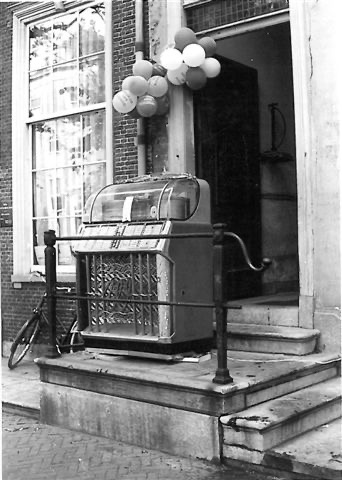
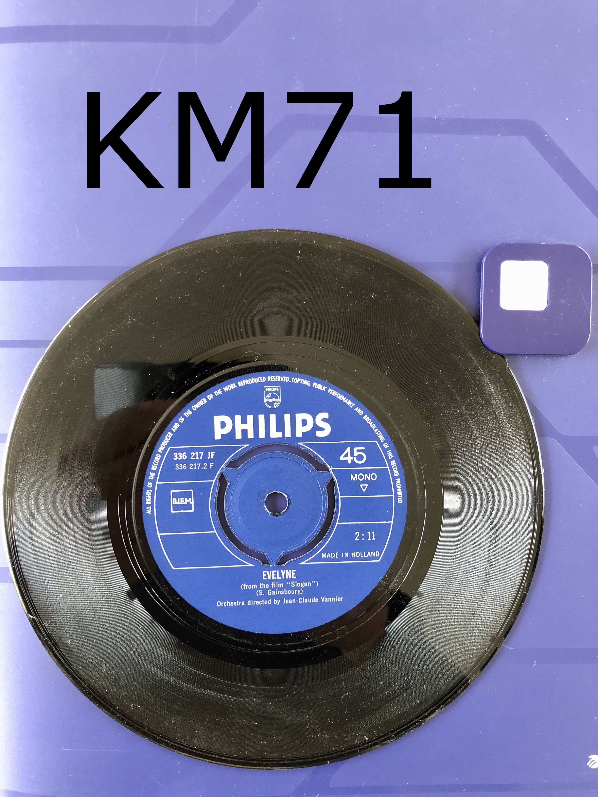

Muziek van de middenkamer,
nu live voor iedereen
KM71 Jukebox Radio speelt de nummers die ooit uit de legendarische jukebox van de middenkamer klonken — van pop en rock tot soul, disco en motown. 24 uur per dag, 7 dagen per week.

Wat er al voorbij kwam
Wat er in de wachtrij staat
Je aanvraag verschijnt binnen ongeveer 12 minuten in de wachtrij hieronder.
Een mix zoals de jukebox 'm speelde
Geen strak format, maar een eerlijke mix van decennia en stijlen.
Zoek 'm op, vraag 'm aan
Blader hieronder door de volledige KM71-bibliotheek. Vraag een nummer aan voor jezelf, of draag het op aan iemand anders. De radio blijft gewoon doorspelen terwijl je zoekt.
De wachtrij
Je aanvraag verschijnt binnen ongeveer 12 minuten in de wachtrij hieronder.
In drie stappen
1. Zoeken
Blader of zoek in de widget naar het nummer of de artiest die je zoekt.
2. Aanvragen
Klik op aanvragen en voeg eventueel een opdracht of groet toe.
3. Luisteren
De livestream speelt gewoon door bovenin — check de wachtrij hierboven om te zien of je verzoek erin staat.
Van middenkamer tot livestream

Op de middenkamer van het legendarische Delftse Laga roeiershuis Koornmarkt 71 stond een jukebox, die gedurende de jaren gevuld werd met iconische hitsingles. Dit radiostation is gebouwd uitgaande van de muziek in deze legendarische jukebox.
De eclectische muziek is een mengeling van pop, rock, progressieve rock, jazz, latin, dance, soul, hits, disco, motown, world, Franse hijg en een vleugje klassiek — voornamelijk uitgebracht vanaf 1950 tot nu.
In het kort
- Gebaseerd op de jukebox van Koornmarkt 71, Delft
- Muziek van 1950 tot nu, geen strak format
- Luisteraars kiezen zelf nummers via verzoekjes
- De radio speelt 24/7 door, ook tijdens het aanvragen
Genres uit de jukebox
Benieuwd wat er nu draait?
Check de homepage voor de historie, of vraag meteen je eigen nummer aan.
Vraag een nummer aanVraag of tip?
Laat het ons weten — bijvoorbeeld voor een muzieksuggestie voor de bibliotheek, een technisch probleem met de stream, of iets anders.
- E-mail e-mailadres laden…